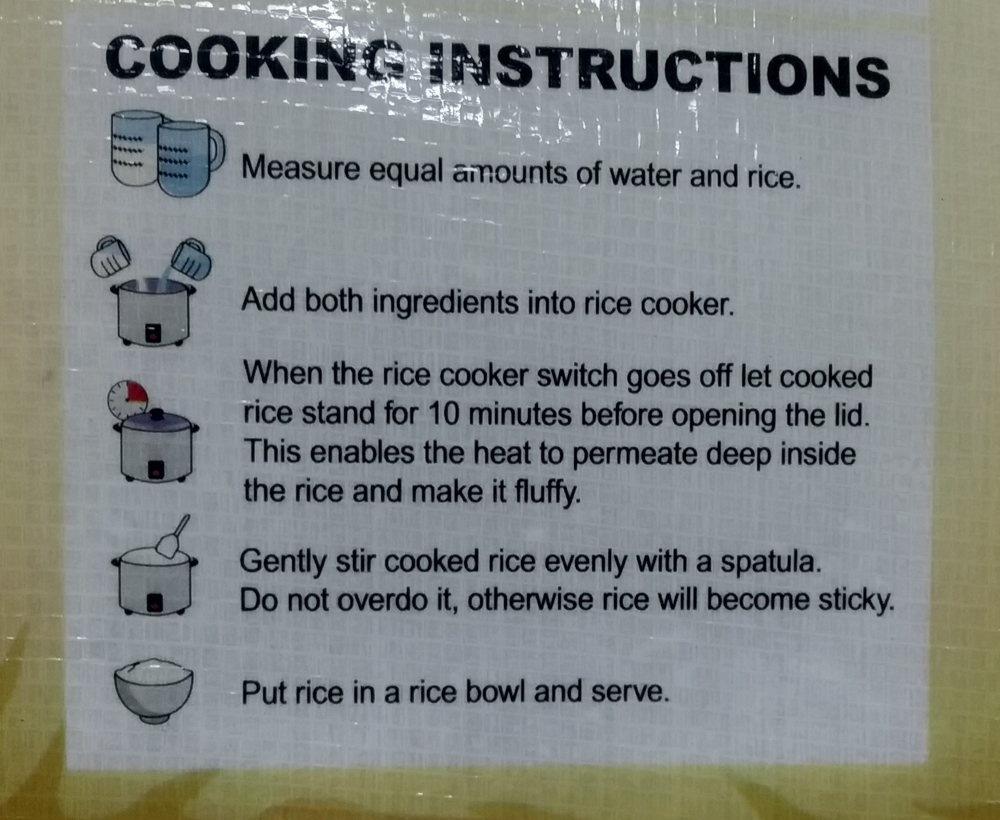

Pan-Pan Dinorado Special Rice Sack



- Variety: Dinorado
- Classification: Special Rice
- Grade: Whole Grain
- Crop Year: Current Year
- Date of Milling: ___________
- Moisture Content: 12%
Cooking Instructions
- Measure equal amounts of water and rice.
- Add both ingredients into rice cooker.
- When the rice cooker switch goes off let cooked rice stand for 10 minutes before opening the lid. This enables the heat to permeate deep inside the rice and make it fluffy.
- Gently stir cooked rice evenly with a spatula. Do not overdo it, otherwise rice will become sticky.
- Put rice in a rice bowl and serve.